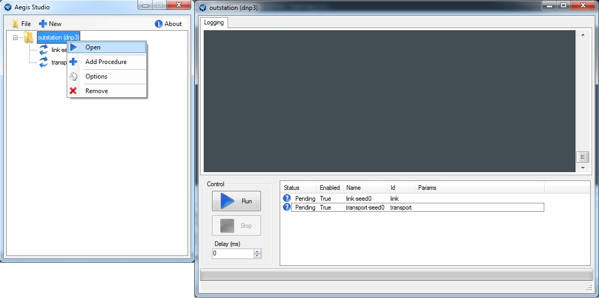
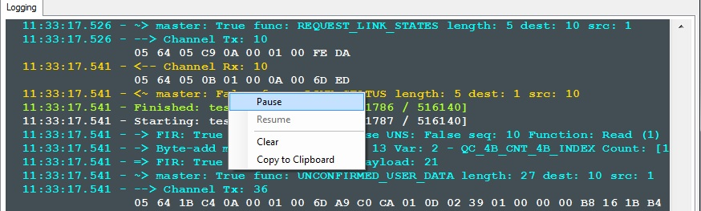
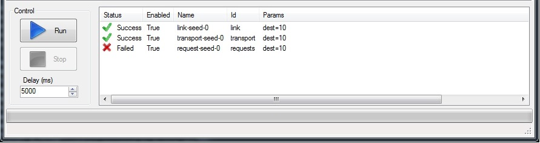
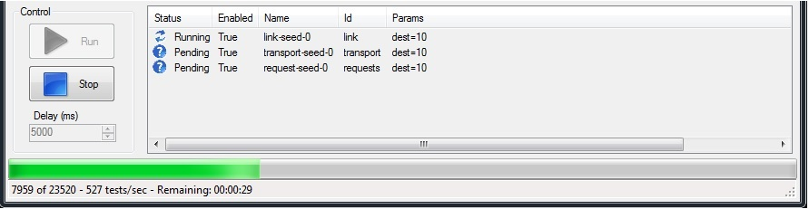

Running Tests¶
You can launch a suite by right clicking on a test suite and selecting Open.
This action launches an independent test window with a list box of all the tests in the suite. By default, all procedures are enabled to run in sequential order. You can disable individual test procedures by right clicking and selecting Disable. Clicking the Run button initiates the test sequence. You cannot adjust any parameters will the tests are running.
Log Window¶
The top panel is a running log with a built-in protocol decoder. You can right-click the log window to see available options.
- Pause - Pause the window so that contents are not overwritten. This action does not pause the test itself.
- Resume - Resume logging to the window.
- Clear - Clear the log window contents.
- Copy to Clipboard - Save the contents to the clipboard where they can be pasted into text files.
Double-clicking the log window toggles the pauses or resumes logging. A paused window displays a red border.
Procedure Info¶
An icon is displayed in the list box for each test procedure indicating its current state.
- The first column displays the current state of the procedure. { Pending, Running, Failed, Canceled, Success }
- You can exclude individual tests from the test sequence by right-clicking and selecting Disable.
- The user supplied name and module-unique Id field are displayed for reference.
- The final column, Params, displays any non-default settings. This includes overridden module/channel settings.
You can override procedure settings for each test by right-clicking on its row and selecting Options. Changing settings in the test window does not modify the values in the XML configuration. If you want to permanently change settings, you must do this from the main form.
Progress Indicators¶
There are a number of indicators of progress available. While a test is running, a progress bar is updated that displays the current test case#/total, current tests/sec, and an estimated time to completion.
